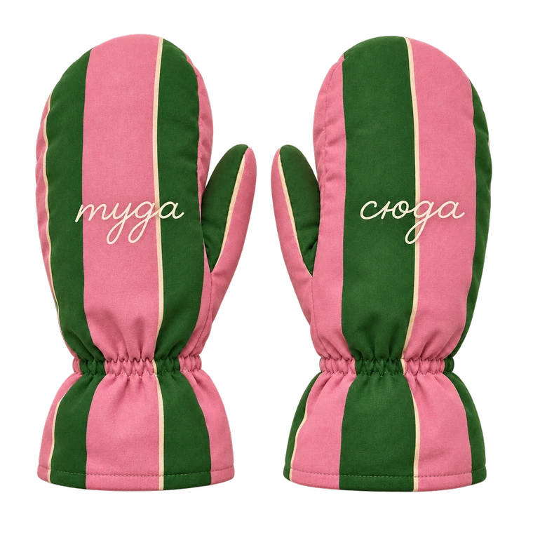

Варежки

Мы придумали Причуды с простой мыслью. Пусть зимой будет приятно гулять и малышу, и тому, кто везёт коляску.


Санкт-Петербург · разные образы
К пуховику, пальто и вашему настроению. Посмотрите, как носить наши варежки.
Предзаказ откроется, когда будут готовы цена и сроки первой партии. Пока можно выбрать вещь и принт и посмотреть, как будет выглядеть заявка.
Изделия показаны в эскизах.